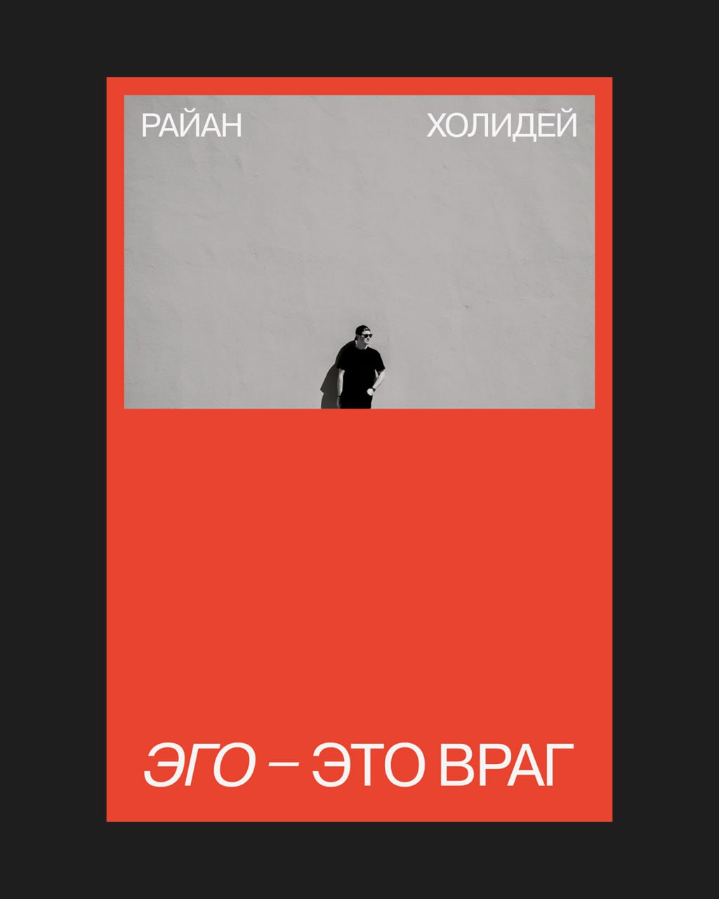

Тему деструктивного влияния эго на культуру и бизнес для меня еще давно открыл Коллинз. Он приводил множество примеров, где компании теряли устойчивость не из-за рынка или стратегии, а потому что в центре решений оказывалось эго руководителя.
Поэтому мне было особенно интересно изучить эту тему глубже, к тому же, ее написал один из моих любимых авторов. По сути, это попытка с другой стороны разобрать ту же проблему: что происходит, когда чувство собственной значимости начинает мешать видеть реальность.
Эта тема напрямую связана с предыдущим постом, эго — один из главных факторов, который ломает сотрудничество. Когда вместе работают сильные люди с разными взглядами, различия неизбежны. Но именно эго превращает разницу мнений в конфликт, а конфликт — в отказ работать друг с другом.
В этот момент люди перестают искать решения и начинают защищать позиции. Совместный выигрыш перестает быть целью. В итоге проигрывают все — команда, продукт, бизнес.
Мне важно, чтобы в культуре этого было как можно меньше, хотя это сложно. Особенно в среде сильных, умных, самостоятельных людей. Эго проявляется в спорах, в нежелании уступить, в убежденности, что «я вижу ситуацию лучше».
Книга хорошо напоминает простую вещь: эго почти всегда мешает. Оно искажает реальность, делает обратную связь бесполезной, ломает сотрудничество и особенно опасно в кризисе.
Противоядие у автора одно — смирение и скромность. Это практический навык, который надо развивать: ставить результат выше собственного эго.
В карточках, как обычно, самые полезные мысли из книги.
Карточки
Эго как враг реальности
Одна из базовых идей книги - эго искажает реальность Холидей показывает это на повторяющемся паттерне: человек приписывает успехи себе, а неудачи - внешним обстоятельствам. В книге приводятся примеры военных и политических лидеров, которые проигрывали не из-за нехватки ресурсов, а из-за уверенности в собственной непогрешимости. Они игнорировали факты, потому что факты противоречили их образу себя. Главная мысль: пока эго фильтрует реальность, человек не способен ни учиться, не корректировать свое решения.
Эго подменяет работу ощущением значимости
Холидей много пишет о том, как эго смещает фокус с процесса на статус. Вместо вопроса «что нужно делать?» появляется вопрос «как я выгляжу?». В книге есть повторяющийся образ: люди начинают жить в будущем результате (признании, успехе, статусе) и перестают делать скучную, последовательную работу, которая к этому результату ведет. Эго создает ощущение движения без реального прогресса.
Почему эго делает обратную связь бесполезной
Отдельная важная линия книги - отношение к критике Холидей показывает, что эго воспринимает любую обратную связь как угрозу личности. В примерах из бизнеса и спорта люди формально слушают критику, но сразу начинают объяснять контекст, намерения и причины. Это выглядит как диалог, но на самом деле является защитой.
Эго в момент поражения и кризиса
Большой блок книги посвящен неудачам Холидей показывает, что в кризисе эго проявляется сильнее всего. Вместо анализа фактов появляется стремление сохранить самооценку: найти виноватых, упростить причины, принять поспешные решения. В книге есть примеры, где именно такие реакции усиливали поражение. Идея проста: кризис требует максимальной честности с реальностью, а эго этому мешает.
Смирение как практический навык
Когда обратная связь появляется только в сложных моментах, она воспринимается как резкая и токсичная критика - в один разговор попадает все накопленное. Регулярный фидбек снимает напряжение. Короткие и частые корректировки делают прямоту частью нормальной работы, а не экстренной мерой.